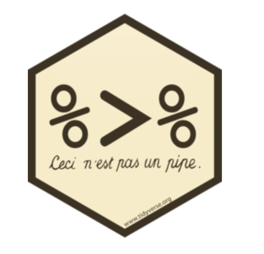
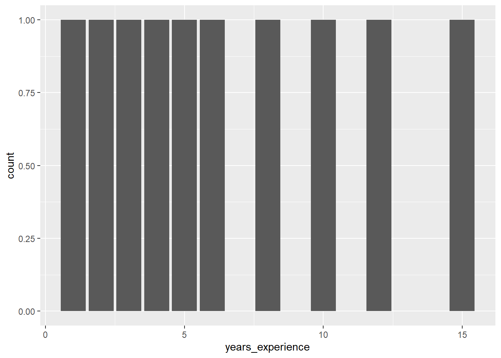
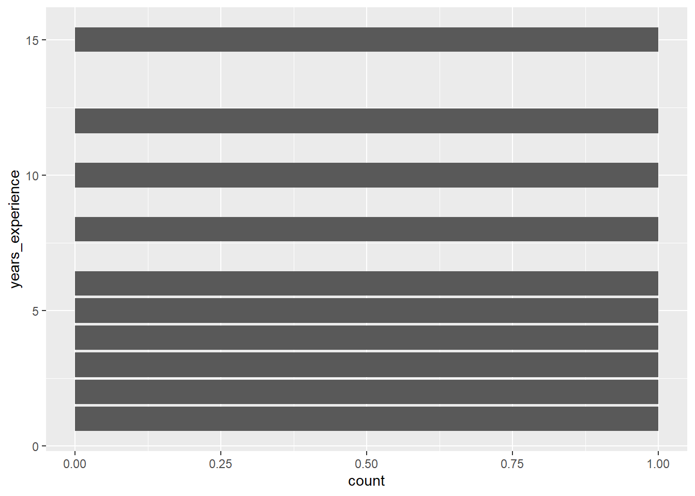
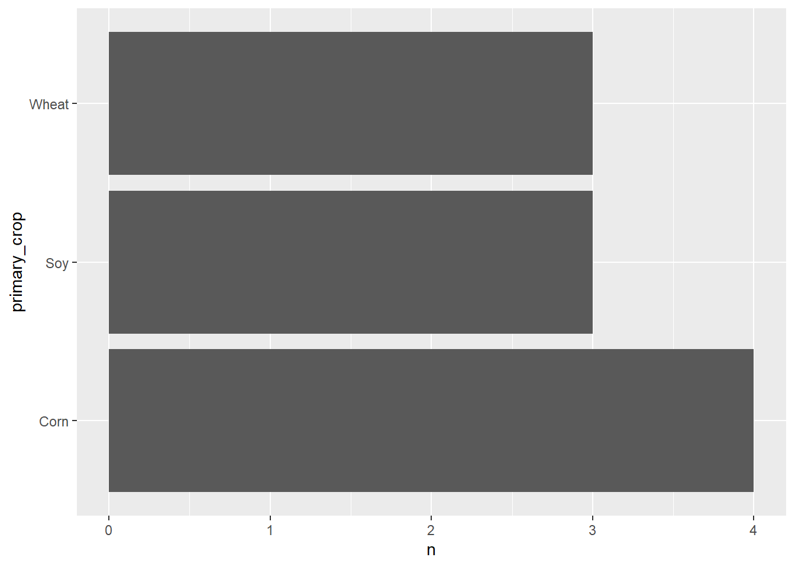

# A vector of numbers
numbers <- c(1, 2, 3, 4, 5)
# A vector of words
fruits <- c("apple", "banana", "cherry")
# A vector of TRUE/FALSE values
logic <- c(TRUE, FALSE, TRUE)Week 3
Data Types
Agenda
- Discussion of Assigned Reading
- Intro to R and Data Cleaning
- Activity
- Exploratory Data Analysis
Discussion of Assigned Reading
- Reading: The Persistent Grip of Social Class on College Admissions
- What was the design element you liked?
- How do you think grammar of graphics was portrayed in the graph?
Vectors in R
A vector is like a single column of data in R, it’s a list of values that are all the same type (like all numbers or all words).
Example:
Data Frames in R
A data frame is like a table or spreadsheet — it has rows and columns, and each column can have its own type (numbers, words, etc.).
# Create a data frame
students <- data.frame(
name = c("Alice", "Bob", "Charlie"),
age = c(20, 21, 19),
major = c("Math", "Physics", "Biology")
)
# Print the data frame
print(students) name age major
1 Alice 20 Math
2 Bob 21 Physics
3 Charlie 19 BiologyData types in R
Data Types: A data type tells you what kind of data something is, like a number, a word (string), or a TRUE/FALSE value (logical).
# Numeric (numbers)
num <- 42
# Character (text)
text <- "Hello, R!"
# Logical (TRUE/FALSE)
logic <- TRUE
# Print the values and their types
print(num) # 42[1] 42print(text) # "Hello, R!"[1] "Hello, R!"print(logic) # TRUE[1] TRUE# Check the data type using class()
class(num) # "numeric"[1] "numeric"class(text) # "character"[1] "character"class(logic) # "logical"[1] "logical"Data Cleaning
Real data has:
- inconsistent labels
- missing values
- mixed units
- impossible numbers
dplyr and tidyr are part of the tidyverse (package) and help you clean data using readable, step-by-step pipelines. Together, they make it easy to standardize values, reshape tables, handle missing data, and prepare datasets for analysis.
Functions we use to clean data
| Function | What it does | Example |
|---|---|---|
str_trim() |
Remove extra spaces | " Coffee " → "Coffee" |
str_to_lower() |
Convert text to lowercase | "Tea" → "tea" |
str_to_upper() |
Convert text to uppercase | "Water" → "WATER" |
Functions we use to clean data (Continued)
parse_number() extracts the first number it finds in a string.
library(tidyverse)
df <- df |>
mutate(
hours = parse_number(hours),
commute = parse_number(commute),
units = parse_number(units)
)Functions we use to clean data (Continued)
case_when() Creates a new variable using multiple conditions.
df <- df |>
mutate(
drink_clean = case_when(
#logical condition, condition ~ value_if_true “is in”
#If condition is TRUE, then assign "water"
#drink == "water" checks ONE VALUE
drink %in% c("water", "sparkling water") ~ "water",
drink %in% c("tea", "peach iced tea") ~ "tea",
drink %in% c("coffee", "coffee/liquid") ~ "coffee",
TRUE ~ "other"
)
)Data Cleaning
Before we can clean data, we first need to load it into our R session.
CSVs
A comma separate value (CSV) file stores tabular data with each row on a new line and each column delimited by a comma. Good for storing R data frames in your file system.
. . .
Reading into R (base R)
data <- read.csv("data/week1_survey.csv")
dataCSVs
A comma separate value (CSV) file stores tabular data with each row on a new line and each column delimited by a comma. Good for storing R data frames in your file system.
Reading into R (readr)
library(readr)Warning: package 'readr' was built under R version 4.5.1# library(tidyverse) # easy alternative
# read_csv: modern tidyverse approach, faster, safer, more predictable
data <- read_csv("data/week1_survey.csv")Rows: 19 Columns: 7
── Column specification ────────────────────────────────────────────────────────
Delimiter: ","
chr (5): hours, commute, drink, major, units
lgl (2): transfer, gradstudent
ℹ Use `spec()` to retrieve the full column specification for this data.
ℹ Specify the column types or set `show_col_types = FALSE` to quiet this message.data# A tibble: 19 × 7
hours transfer gradstudent commute drink major units
<chr> <lgl> <lgl> <chr> <chr> <chr> <chr>
1 7 FALSE FALSE 20 water Rheto… 6
2 8 FALSE FALSE 10 min water Env.E… 15
3 7 hours TRUE TRUE 20 mins coffee Busin… 13
4 6 hrs TRUE FALSE 5 min champagne appli… 13 u…
5 4 hours/5 hours FALSE FALSE 10 min sprite Econo… 16
6 9hrs TRUE FALSE 45 min coffee DATA … 13 u…
7 7 hours FALSE FALSE 7 mins water Data … 14
8 6 hrs FALSE FALSE ~10 Peach Iced tea CB 18
9 8h TRUE FALSE 5m water Data … 14
10 7h30 FALSE FALSE 20 min water Molec… 15
11 8h TRUE FALSE 60 tea stati… 20
12 8hours/wd FALSE FALSE 2 minutes coffee/liquid legal… 17 u…
13 7.5h FALSE FALSE 30 min tea poli.… 20u
14 7h avg NA TRUE 20 minute sparkling water Buisi… 15
15 7.5h FALSE TRUE 35 min gin and tonic stati… 13
16 6 TRUE FALSE 10 Tea compu… 11
17 8 hours TRUE FALSE 45 min water Data … 17 u…
18 6 FALSE FALSE 20 tea math 20
19 6 FALSE FALSE 10 min Iced Matcha Latte Socio… 12 Data Cleaning (Continued)
#Preview the first few rows of the dataset
head(data)# A tibble: 6 × 7
hours transfer gradstudent commute drink major units
<chr> <lgl> <lgl> <chr> <chr> <chr> <chr>
1 7 FALSE FALSE 20 water Rhetoric 6
2 8 FALSE FALSE 10 min water Env.Econ 15
3 7 hours TRUE TRUE 20 mins coffee Business managem… 13
4 6 hrs TRUE FALSE 5 min champagne applied math 13 u…
5 4 hours/5 hours FALSE FALSE 10 min sprite Economics 16
6 9hrs TRUE FALSE 45 min coffee DATA SCIENCE 13 u…Core dplyr functions
slice()# Pick rows by position (e.g., first 5 rows)select()# Choose specific columnsfilter()# Keep rows that meet a conditionmutate()# Create or modify columnsarrange()# Sort rows by one or more variablessummarize()# Compute summary statistics (mean, count, etc.)group_by()# Group data so summaries are done per category
dplyr verbs
slice()select()filter()mutate()arrange()summarize()group_by()
- All of these have a data frame as the first argument.
- All of these produce a data frame as output.
- Within the function, you can simply refer to column names unquoted.
Data Pipelines in R

2016: magrittr introduces %>%
|>
2021:
R now provides a simple native forward pipe syntax |>. The simple form of the forward pipe inserts the left-hand side as the first argument in the right-hand side call.
Using pipeline with our data
Without the pipeline, we would have to apply each function one at a time:
summarize(
filter(data, major == "statistics"),
mean(sleep_hours, na.rm = TRUE)
)
# results in nested function which can be very messyUsing the pipeline, this becomes very clean:
data |>
filter(major == "statistics") |>
summarise(mean(sleep_hours, na.rm = TRUE))What we want:
library(tidyverse)Warning: package 'tidyverse' was built under R version 4.5.1Warning: package 'ggplot2' was built under R version 4.5.1Warning: package 'tibble' was built under R version 4.5.1Warning: package 'tidyr' was built under R version 4.5.1Warning: package 'purrr' was built under R version 4.5.1Warning: package 'dplyr' was built under R version 4.5.1Warning: package 'stringr' was built under R version 4.5.1Warning: package 'forcats' was built under R version 4.5.1Warning: package 'lubridate' was built under R version 4.5.1── Attaching core tidyverse packages ──────────────────────── tidyverse 2.0.0 ──
✔ dplyr 1.1.4 ✔ purrr 1.1.0
✔ forcats 1.0.1 ✔ stringr 1.5.2
✔ ggplot2 4.0.0 ✔ tibble 3.3.0
✔ lubridate 1.9.4 ✔ tidyr 1.3.1
── Conflicts ────────────────────────────────────────── tidyverse_conflicts() ──
✖ dplyr::filter() masks stats::filter()
✖ dplyr::lag() masks stats::lag()
ℹ Use the conflicted package (<http://conflicted.r-lib.org/>) to force all conflicts to become errorsfarm_data <- tibble(
employee_id = 1:10,
hours_worked = c(40, 55, 38, 60, 45, 50, 42, 65, 37, 48),
seasonal_worker = c(TRUE, TRUE, FALSE, TRUE, FALSE, TRUE, FALSE, TRUE, FALSE, FALSE),
supervisor = c(FALSE, FALSE, TRUE, FALSE, TRUE, FALSE, TRUE, FALSE, TRUE, FALSE),
commute_min = c(15, 35, 20, 50, 10, 40, 25, 60, 12, 30),
primary_crop = c("Corn", "Wheat", "Corn", "Soy",
"Soy", "Wheat", "Corn", "Soy",
"Corn", "Wheat"),
years_experience = c(2, 5, 10, 3, 12, 4, 8, 1, 15, 6),
hourly_wage = c(18, 20, 25, 19, 28, 21, 24, 17, 30, 23)
)
farm_data# A tibble: 10 × 8
employee_id hours_worked seasonal_worker supervisor commute_min primary_crop
<int> <dbl> <lgl> <lgl> <dbl> <chr>
1 1 40 TRUE FALSE 15 Corn
2 2 55 TRUE FALSE 35 Wheat
3 3 38 FALSE TRUE 20 Corn
4 4 60 TRUE FALSE 50 Soy
5 5 45 FALSE TRUE 10 Soy
6 6 50 TRUE FALSE 40 Wheat
7 7 42 FALSE TRUE 25 Corn
8 8 65 TRUE FALSE 60 Soy
9 9 37 FALSE TRUE 12 Corn
10 10 48 FALSE FALSE 30 Wheat
# ℹ 2 more variables: years_experience <dbl>, hourly_wage <dbl>Reality with data
farm_raw <- tibble(
employee_id = 1:6,
hours_worked = c("40 hours", "55 hrs", "38 hrs", "60 hours", "45hrs", "50hours"),
seasonal_worker = c("yes", "TRUE", "no", "Yes", "false", "TRUE"),
supervisor = c("no", "no", "TRUE", "no", "TRUE", "no"),
commute_min = c("15 minutes", "35 mins", "20min", "50 minute", "10minutes", "40mins"),
primary_crop = c(" Corn", "wheat ", "CORN", "Soy", " soy ", "WHEAT"),
years_experience = c("2 years", "5rs", "10 yrs", "3 yr", "12 years", "4yr"),
hourly_wage = c("18 dollars", "20/hr", "25 per hour", "19 dollars", "28 usd", "21 /day")
)Data Cleaning Example:
library(tidyverse)
farm_clean <- farm_raw |>
mutate(
# numeric columns
hours_worked = parse_number(hours_worked),
commute_min = parse_number(commute_min),
years_experience = parse_number(years_experience),
hourly_wage = parse_number(hourly_wage),
# yes/no variables
seasonal_worker = case_when(
str_to_lower(str_trim(seasonal_worker)) %in% c("yes", "true") ~ TRUE,
str_to_lower(str_trim(seasonal_worker)) %in% c("no", "false") ~ FALSE,
TRUE ~ NA
),
supervisor = case_when(
str_to_lower(str_trim(supervisor)) %in% c("yes", "true") ~ TRUE,
str_to_lower(str_trim(supervisor)) %in% c("no", "false") ~ FALSE,
TRUE ~ NA
),
# categorical cleanup
primary_crop =
primary_crop |>
str_trim() |>
str_to_lower()
)
farm_clean# A tibble: 6 × 8
employee_id hours_worked seasonal_worker supervisor commute_min primary_crop
<int> <dbl> <lgl> <lgl> <dbl> <chr>
1 1 40 TRUE FALSE 15 corn
2 2 55 TRUE FALSE 35 wheat
3 3 38 FALSE TRUE 20 corn
4 4 60 TRUE FALSE 50 soy
5 5 45 FALSE TRUE 10 soy
6 6 50 TRUE FALSE 40 wheat
# ℹ 2 more variables: years_experience <dbl>, hourly_wage <dbl>Activity:
- Download your data from the CSV in BCourses
- Download the
.qmdfile which has the instructions - Open the
.qmdfile in Positron or RStudio - Clean all columns to respective datatype
Exploratory Data Analysis
After having cleaned the data, we want to get a sense of what we are looking at.
Let’s use our farm_data data as an example.
Q1: What are the cols and rows?
. . .
dim(farm_data)[1] 10 8. . .
sapply(farm_data, class) employee_id hours_worked seasonal_worker supervisor
"integer" "numeric" "logical" "logical"
commute_min primary_crop years_experience hourly_wage
"numeric" "character" "numeric" "numeric" Q1: What are the cols and rows?
farm_data# A tibble: 10 × 8
employee_id hours_worked seasonal_worker supervisor commute_min primary_crop
<int> <dbl> <lgl> <lgl> <dbl> <chr>
1 1 40 TRUE FALSE 15 Corn
2 2 55 TRUE FALSE 35 Wheat
3 3 38 FALSE TRUE 20 Corn
4 4 60 TRUE FALSE 50 Soy
5 5 45 FALSE TRUE 10 Soy
6 6 50 TRUE FALSE 40 Wheat
7 7 42 FALSE TRUE 25 Corn
8 8 65 TRUE FALSE 60 Soy
9 9 37 FALSE TRUE 12 Corn
10 10 48 FALSE FALSE 30 Wheat
# ℹ 2 more variables: years_experience <dbl>, hourly_wage <dbl>Q1: What are the cols and rows?
- Unit of observation: an individual farm worker
- Variables: employee ID (integer), hours worked (numeric), seasonal worker (logical), supervisor (logical), commute in minutes (numeric), primary crop (character), years of experience (numeric), hourly wage (numeric)
. . .
A description of the variables is often stored in a separate file called a data dictionary.
Q2: Is there any missing data?
. . .
Option 1: Total missing values
library(dplyr)
sum(is.na(farm_data))[1] 0. . .
Option 2: Proportion missing counts
farm_data |>
summarize(across(everything(), ~ mean(is.na(.))))# A tibble: 1 × 8
employee_id hours_worked seasonal_worker supervisor commute_min primary_crop
<dbl> <dbl> <dbl> <dbl> <dbl> <dbl>
1 0 0 0 0 0 0
# ℹ 2 more variables: years_experience <dbl>, hourly_wage <dbl>Q3: What is the distribution of years_experience?
. . .
library(ggplot2)
farm_data |>
ggplot(aes(x = years_experience)) +
geom_bar()
Q3: What is the distribution of years_experience?
farm_data |>
ggplot(aes(y = years_experience)) +
geom_bar()
geom_bar()
. . .
geom_bar() counts up the number of observations in each level of a single variable, then draws bars up to that height.
Summarizing with counts
. . .
farm_data |>
group_by(primary_crop) |>
summarize(count = n())# A tibble: 3 × 2
primary_crop count
<chr> <int>
1 Corn 4
2 Soy 3
3 Wheat 3geom_col()
. . .
geom_col() takes one column of categories and draws a bar for each up to the height of a second column of counts.
. . .
farm_data |>
count(primary_crop) |>
ggplot(aes(y = primary_crop, x = n)) +
geom_col()
Two types of Viz
Exploratory Data Analysis (EDA)
Explanatory Data Analysis
Add notes to each:
Exploratory: - consumer: the analyst - goal: uncover structure for further analysis - follow templates - prioritize quick and accurate interpretation
Explanatory: - consumer: stakeholder - goal: tell a specific story - customized - polished aesthetic
Let us know if you have any questions!
Homework 1 is posted to BCourses
- Due Monday, March 2nd at 11:59PM
Reading for next week: Price of Eggs